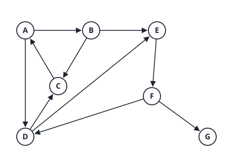
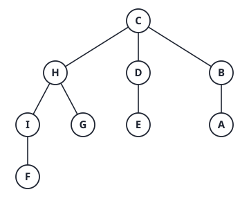
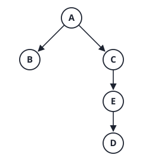
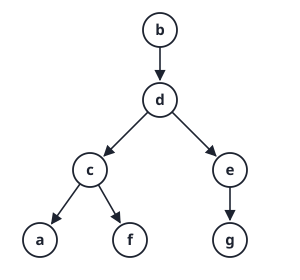

5. Graphs: representation, BFS, DFS, topological sort
Facts
Compare adjacency matrix and adjacency list: space, edge test, and listing the neighbours of a vertex.
Answer
| Matrix | List | |
|---|---|---|
| Space | \Theta(\lvert V\rvert^2) | \Theta(\lvert V\rvert+\lvert E\rvert) |
| Is (u,v) an edge? | O(1) | O(\deg u) |
| List neighbours of u | \Theta(\lvert V\rvert) | \Theta(\deg u) |
Use a list for sparse graphs and a matrix for dense graphs or when you need constant-time edge tests.
Running time of BFS and DFS with each representation.
Answer
Adjacency list: \Theta(|V|+|E|). Adjacency matrix: \Theta(|V|^2), because finding the neighbours of each vertex scans a whole row.
Describe BFS: data structure, what it computes, and its tree property.
Answer
Uses a FIFO queue. Visits vertices in order of distance from the source s. In an unweighted graph it gives the fewest-edge path to every reachable vertex (d[v] = number of edges). Every edge joins vertices whose levels differ by at most 1 (undirected: same level or adjacent levels).
Describe DFS: data structure, colours, and the timestamps.
Answer
Uses a stack (or recursion). White = undiscovered, gray = discovered and still being explored, black = finished. d[v] is the discovery time and f[v] the finishing time, with d[v]<f[v]. Time increases by 1 at each discovery and each finish, so the values run from 1 to 2|V|.
State the white-path style rule that classifies a directed edge (u,v) in DFS.
Answer
When DFS examines (u,v) from u:
- v white: tree edge.
- v gray: back edge (v is an ancestor of u): a cycle.
- v black and d[u]<d[v]: forward edge (v is a descendant).
- v black and d[v]<d[u]: cross edge.
Which edge types exist in an undirected graph’s DFS?
Answer
Only tree and back edges. Forward and cross edges cannot occur, because an undirected edge would have been explored from the other end as a tree or back edge first.
How do you detect a cycle with DFS? With BFS?
Answer
Directed: a cycle exists iff DFS finds a back edge (an edge to a gray vertex). Undirected: any non-tree edge (a back edge to a vertex other than the parent) closes a cycle. BFS: in an undirected graph an edge to an already-visited non-parent vertex means a cycle.
What is a topological order? Which graphs have one?
Answer
A linear order of the vertices such that for every edge (u,v), u comes before v. It exists iff the directed graph is a DAG (no directed cycle). It is not unique in general.
Give the two ways to compute a topological order and their cost.
Answer
- Kahn: repeatedly remove a vertex of in-degree 0 and decrease its neighbours’ in-degrees. If vertices remain and none has in-degree 0, there is a cycle.
- DFS: output vertices in decreasing finishing time f.
Both \Theta(|V|+|E|) with adjacency lists.
In BFS or DFS, can a black vertex have a white neighbour? Why is this the key invariant?
Answer
Never. A vertex turns black only after all its neighbours were discovered. So the set of black vertices is closed: it separates the visited part from the white part, and this gives correctness of both searches.
How do you count connected components of an undirected graph?
Answer
Start a BFS or DFS from every still-white vertex. The number of starts is the number of components. Cost \Theta(|V|+|E|).
Why does BFS fail as a shortest-path algorithm on weighted graphs?
Answer
BFS minimises the number of edges, not the total weight. A path with more edges can be lighter. Dijkstra generalises BFS by replacing the FIFO queue with a priority queue ordered by distance.
Problems
Problem 1: one directed graph, four tasks

Neighbours are always taken in alphabetical order. Start from A.
(a) Run BFS from A. Give the visit order and the level of each vertex.
Answer
Visit order A,B,D,C,E,F,G. Levels: A 0; B,D 1; C,E 2; F 3; G 4. C is at level 2 via B or D (not 1 via A, since C\to A points the other way).
(b) Run a DFS from A (then restart at any white vertex). Give d/f for every vertex and classify every edge.
Answer
| Vertex | d | f |
|---|---|---|
| A | 1 | 14 |
| B | 2 | 13 |
| C | 3 | 4 |
| E | 5 | 12 |
| F | 6 | 11 |
| D | 7 | 8 |
| G | 9 | 10 |
Edge types: A\to B, B\to C, B\to E, E\to F, F\to D, F\to G are tree. A\to D is forward (D is a black descendant, d[A]<d[D]). D\to C is cross (C is black and finished earlier, d[C]<d[D]). C\to A and D\to E are back (they point to gray ancestors).
(c) Which cycles do the back edges expose?
Answer
C\to A closes A\to B\to C\to A. D\to E closes E\to F\to D\to E. So the graph is not a DAG, and it has no topological order.
(d) Delete both back edges. Give a topological order using each method.
Answer
Kahn (queue starts with the in-degree-0 vertex A): A,B,E,F,D,G,C. DFS decreasing finish time (restarting DFS on the new graph): A,B,E,F,G,D,C. Both orders are valid: check every remaining edge goes left to right. They differ because a topological order is not unique (G and D are unrelated).
(e) Link to Dijkstra: if every edge had weight 1, what would Dijkstra’s priority queue pop order look like compared with BFS?
Answer
The same distances, and a pop order that is a BFS order (ties may be broken differently). BFS is Dijkstra with unit weights, where a FIFO queue already keeps the distances in sorted order, so no heap is needed. Running time falls from O(|E|\log|V|) to \Theta(|V|+|E|).
Past-year questions
Questions from past papers (SC2001/CZ2101/CE2001). Every answer was worked out and checked by code; where a circulated official solution exists it was compared, and disagreements are flagged.
AY25/26 S2 1(e) Graphs (n vertices, m edges). A. When the graph is sparse (m=O(n)), an adjacency matrix is preferred over an adjacency list. B. In DFS and BFS, a black node can have a white neighbour. C. In DFS and BFS, a black node can have a gray neighbour. D. If the graph is not connected, the BFS given in the lecture can visit all vertices. E. If the graph is not connected, the DFS algorithm given in the lecture can visit all vertices.
Answer
C and E.
- A false: a sparse graph wastes \Theta(n^2) space in a matrix, and a list needs \Theta(n+m).
- B false: the black-white invariant, a black vertex never has a white neighbour.
- C true: when a vertex finishes (black) its neighbours are all discovered, but some may still be gray. In DFS the gray neighbour is an ancestor still on the stack; in BFS it is a vertex waiting in the queue.
- D false: the lecture’s BFS starts from one source s and reaches only s’s component.
- E true: the lecture’s DFS has an outer loop that restarts at every white vertex, so it visits everything.
AY20/21 S2 3(a) Give the adjacency matrix and adjacency list representations of the graph in Figure Q3, respectively. For the matrix, please use \infty to denote the edge value between two nodes without an edge.

Answer
The graph is undirected, with the edges AB\,4, AC\,4, BC\,2, CD\,3, CE\,2, CF\,4, DF\,2, EF\,3.
Adjacency matrix (symmetric; a vertex has 0 to itself):
| A | B | C | D | E | |
|---|---|---|---|---|---|
| A | 0 | 4 | 4 | ∞ | ∞ |
| B | 4 | 0 | 2 | ∞ | ∞ |
| C | 4 | 2 | 0 | 3 | 2 |
| D | ∞ | ∞ | 3 | 0 | ∞ |
| E | ∞ | ∞ | 2 | ∞ | 0 |
| F | ∞ | ∞ | 4 | 2 | 3 |
Adjacency list (each edge appears twice; the pairs are (neighbour, weight)):
- A: (B,4) → (C,4)
- B: (A,4) → (C,2)
- C: (A,4) → (B,2) → (D,3) → (E,2) → (F,4)
- D: (C,3) → (F,2)
- E: (C,2) → (F,3)
- F: (C,4) → (D,2) → (E,3)
(Any order within a list is acceptable.)
Link. The matrix has 6\times6=36 cells for 8 edges, and 20 of them are 0 or \infty (6 diagonal zeros and 14 missing edges); the lists hold 2\times8=16 entries. The graph is sparse (E\ll V^2), so the list is the better representation, as on the graph traversal page. Notice also the high degree of C (5): it is joined to every other vertex.
AY19/20 S1 3(a) A weighted undirected graph G is shown in Figure Q3. Run breadth-first search (BFS) on G, starting from vertex C and visiting the neighbors of each vertex in reverse alphabetical order. Draw the BFS tree.

Answer
Edges (BFS ignores the weights): AB,AG,AF,BG,BC,GI,GH,FI,FE,IH,IE,HC,HD,ED,CD. The queue starts with C; each vertex’s undiscovered neighbours are added in reverse alphabetical order.
| dequeue | neighbours (reverse alphabetical) | newly discovered, in order | queue after |
|---|---|---|---|
| C | H, D, B | H, D, B (parent C) | H, D, B |
| H | I, G, D, C | I, G (parent H) | D, B, I, G |
| D | H, E, C | E (parent D) | B, I, G, E |
| B | G, C, A | A (parent B) | I, G, E, A |
| I | H, G, F, E | F (parent I) | G, E, A, F |
| G | all already discovered | none | E, A, F |
| E, A, F | all already discovered | none | empty |
BFS order C,H,D,B,I,G,E,A,F. BFS tree edges: CH, CD, CB, HI, HG, DE, BA, IF (8 edges for 9 vertices).

Levels: C (0); H, D, B (1); I, G, E, A (2); F (3). (Checked by code.)
Link. The level of a vertex is its fewest-edge distance from C, so BFS solves the unweighted shortest path problem. Compare the weighted graph: the edge HD=8 is heavy but D is still at level 1, because BFS does not look at weights. The tree is not unique; the neighbour order decides it, which is why the question fixes the order.
AY18/19 S2 3(a) Give the adjacency matrix and adjacency list representations of the graph in Figure Q3, respectively. For matrix, (row, column) denotes the edge direction, e.g., the entry in (A,B) is 5 and (B,A) is \infty.

Answer
The graph is directed, with edges A\to B\,5, A\to C\,1, C\to B\,4, C\to E\,-3, D\to B\,1, D\to C\,2, E\to D\,-2.
Adjacency matrix (row = source, column = destination; \infty = no edge; the diagonal is 0 by convention):
| A | B | C | D | E | |
|---|---|---|---|---|---|
| A | 0 | 5 | 1 | ∞ | ∞ |
| B | ∞ | 0 | ∞ | ∞ | ∞ |
| C | ∞ | 4 | 0 | ∞ | -3 |
| D | ∞ | 1 | 2 | 0 | ∞ |
| E | ∞ | ∞ | ∞ | -2 | 0 |
Adjacency list (out-neighbours, as (vertex, weight)):
- A: (C,1) → (B,5)
- B: empty
- C: (E,-3) → (B,4)
- D: (B,1) → (C,2)
- E: (D,-2)
(Any order in a list is acceptable.)
Link. B has no out-edges, so it is a sink: its matrix row is all \infty and its list is empty. The cycle C\to E\to D\to C has weight -3-2+2=-3 (negative), which is what makes part (c) interesting.
AY18/19 S2 3(b) (i) From node A, draw the DFS (depth first search) tree of the graph in Figure Q3. (ii) Justify which representation (matrix or list) is more efficient for DFS.
Answer
(i) Visit neighbours in alphabetical order. From A: neighbours B, C: go to B; B has no out-edges, so it finishes. Back at A: next neighbour C; from C: neighbours B (already visited), E: go to E; from E: neighbour D; from D: neighbours B and C are both already discovered, so D finishes; then E, C and A finish. DFS tree edges: A\to B, A\to C, C\to E, E\to D.

The edge D\to C goes back to the ancestor C: a back edge, which shows the cycle C\to E\to D\to C.
(ii) The adjacency list is more efficient. With a list DFS looks at each vertex once and each edge once: O(V+E). With a matrix, finding the neighbours of a vertex means scanning a whole row of length V, so DFS costs O(V^2) whatever the number of edges. The list also needs O(V+E) space against O(V^2). (For a very dense graph, E\approx V^2, the two are equal.)
(Flag: the circulated solution argues that sorted lists make DFS return a minimum-cost path. That is false: DFS follows the first unvisited neighbour deep and does not minimise any cost. The valid reason is O(V+E) against O(V^2).)
Link. Here V=5 and E=7, so V+E=12 against V^2=25 matrix cells: the list wins even on this tiny graph. The DFS tree is a spanning tree of the vertices reachable from A, but it is not a minimum one and not a shortest-path tree (the path A\to C\to E\to D has weight -4 while the tree path to B is the direct edge, weight 5).
AY18/19 S1 4(a)(i) A weighted directed graph G is represented by the array of adjacency lists: a: (d,1) (b,2); b: (d,3) (e,10); c: (a,4) (f,5); d: (e,2) (c,2) (g,4) (f,8); e: (g,6); f: (empty); g: (f,1). Run depth-first search (DFS) on G, starting from vertex b and visiting the neighbors of each vertex in alphabetical order. Draw the DFS tree.
Answer
Visit the neighbours alphabetically, and go deeper at once. From b: neighbours d, e: go to d. From d: neighbours c, e, f, g: go to c. From c: neighbours a, f: go to a. From a: neighbours b, d are both discovered, so a finishes. Back at c: next neighbour f (no out-edges): finishes. c finishes. Back at d: next neighbour e; from e: neighbour g; from g: neighbour f is discovered, so g finishes, then e finishes. At d the remaining neighbours g and f are already discovered, so d finishes, then b (its neighbour e is discovered) finishes.
DFS order b,d,c,a,f,e,g; finishing order a,f,c,g,e,d,b. DFS tree edges: b\to d, d\to c, c\to a, c\to f, d\to e, e\to g (6 edges for 7 vertices, all reachable from b).

Link. DFS classifies the edges that are not in the tree: a\to b and a\to d are back edges (to an ancestor), b\to e, d\to f and d\to g are forward edges (to a descendant reached another way), and g\to f is a cross edge. A back edge signals a cycle in a directed graph: a\to b closes b\to d\to c\to a\to b, and a\to d closes d\to c\to a\to d.
AY17/18 S1 4(a) Consider a weighted directed graph G shown in Figure Q4 (vertices 1 to 5; edges 1\to2\,(4), 1\to3\,(2), 2\to3\,(1), 2\to5\,(4), 4\to1\,(6), 5\to2\,(3), 5\to4\,(1)). (i) Draw the representation of graph G using an array of adjacency lists. (ii) In the array of adjacency lists, each list node contains a vertex label, an edge weight and a list reference. Assume that each vertex label requires one word, a list reference requires one word, and an edge weight requires one word. How many words of memory would be needed to represent graph G using an array of adjacency lists? Briefly justify your answer.

Answer
(i) Array indexed by the vertex, each entry the head of a list of (neighbour, weight):
- 1: (2,4) → (3,2)
- 2: (3,1) → (5,4)
- 3: empty
- 4: (1,6)
- 5: (2,3) → (4,1)
(ii) There are 7 edges, so 7 list nodes, each with a vertex label, an edge weight and a list reference: 3\times7=21 words. The array itself holds one list reference (head pointer) per vertex: 5 words. Total 21+5=26 words. In general 3E+V words. (The circulated answer lists only the per-node sizes; if the array slots are not counted, the answer is 21. State the assumption.)
Link. The memory is \Theta(V+E), against V^2=25 words for an adjacency matrix (one weight per cell). For this small graph the two are close, but the list wins as soon as the graph is sparse.
AY17/18 S1 4(b) Run depth-first search (DFS) on graph G in Figure Q4, starting from vertex 1, visiting the neighbours of each vertex in increasing order of the keys. List the order of vertices being visited by the DFS traversal, and draw the DFS tree.
Answer
From 1: neighbours 2, 3: go to 2. From 2: neighbours 3, 5: go to 3; vertex 3 has no out-edges and finishes. Back at 2: next neighbour 5. From 5: neighbours 2 (already visited) and 4: go to 4. From 4: neighbour 1 is visited, so 4 finishes, then 5, then 2. Back at 1: neighbour 3 is already visited, so 1 finishes.
Visiting order: 1, 2, 3, 5, 4. DFS tree edges: 1\to2, 2\to3, 2\to5, 5\to4 (checked by code). The edges 1\to3 (forward), 5\to2 and 4\to1 (back edges) are not in the tree; 4\to1 and 5\to2 show that G has cycles (1\to2\to5\to4\to1 and 2\to5\to2).
Link. DFS visits all 5 vertices from vertex 1 because everything is reachable; the tree has 4 edges. The back edges are exactly what a topological sort would reject, so this graph is not a DAG.
AY16/17 S2 4(a) For depth-first search on a sparse graph G=(V,E), where |E|=O(|V|), is the adjacency matrix more efficient than the array of adjacency lists? Justify your answer.
Answer
No, the adjacency list is more efficient. DFS with lists visits each vertex once and walks each list once: O(|V|+|E|)=O(|V|) for a sparse graph. With a matrix, finding the neighbours of a vertex means scanning its whole row of |V| cells, so DFS costs O(|V|^2) whatever the number of edges. Space: lists O(|V|+|E|)=O(|V|), matrix \Theta(|V|^2), of which only O(|V|) cells are used (for example 4 of 16 for a graph with 4 edges on 4 vertices).
Link. Matrix and list are only equal when the graph is dense (|E|=\Theta(|V|^2)). The matrix has O(1) edge lookup, which DFS does not need.
AY16/17 S2 4(b) For the graph in Figure Q4a, construct the breadth-first search (BFS) tree, by a BFS traversal starting from vertex A. Assume the neighbours of a vertex are visited in alphabetical order.

Answer
Edges: AB, AC, AD, AE, BD, BF, DF, CG, EG. Queue starts with A. Process A: neighbours B, C, D, E (all new, in alphabetical order). Process B: neighbours A, D (already discovered) and F: F is new (parent B). Process C: neighbours A and G: G is new (parent C). Process D: neighbours A, B, F all discovered. Process E: neighbours A and G, both discovered. Process F, G: nothing new.
BFS order A,B,C,D,E,F,G. BFS tree edges: AB, AC, AD, AE, BF, CG (6 edges for 7 vertices). Levels: A (0); B, C, D, E (1); F, G (2). The non-tree edges BD, DF and EG connect vertices of the same or neighbouring levels. (Checked by code.)
Link. The level of a vertex is its fewest-edge distance from A: F is two edges from A (via B or via D) but BFS records the first one found, B, because B comes first alphabetically.
AY15/16 S2 4(a) To represent a graph, would you use an adjacency matrix or an array of adjacency lists in each of the following situations? Briefly justify your choice. (i) The graph has 1,000 vertices and 450,000 edges, and space efficiency is important. (ii) The graph has 1,000 vertices and 2,000 edges, and it is important to save memory usage. (iii) We need to determine whether two vertices in the graph are adjacent or not as fast as possible, whereas space efficiency is less important.
Answer
Memory: a matrix has V^2 cells; lists need one list node per edge entry (a vertex label, a weight and a pointer, i.e. 2 to 3 words, as in AY1718 S1 4(a)) plus V head pointers.
(i) Adjacency matrix. V^2=10^6 cells. With 450,000 edges the graph uses 45% of the cells if the edges are directed (about 90% if undirected, where the matrix is symmetric). Lists need one node per directed edge entry: for directed edges 450,000 nodes, i.e. 0.9 million words with 2-word nodes and 1.35 million with the lecture’s 3-word node (label, weight, pointer), against 1 million for the matrix: about the same, and the matrix wins with 3-word nodes. For undirected edges the lists hold 900,000 entries, i.e. 1.8 to 2.7 million words: the matrix wins clearly. (The circulated solution picks lists for the directed case, assuming only a 50% overhead per node.)
(ii) Adjacency list. 2,000 edges is only 0.2% of the 10^6 cells. Lists need about 3\cdot2000+1000=7000 words (twice that if undirected) against 10^6.
(iii) Adjacency matrix. matrix[u][v] is
an O(1) lookup. In a list the
neighbours of u must be scanned: O(\deg(u)), up to O(V).
Link. The break-even density is about \frac1{(\text{words per list node})}: with 3-word nodes the matrix is smaller once more than a third of the possible edges are present. Space and speed pull in opposite directions only for sparse graphs; dense graphs favour the matrix on both counts.
AY15/16 S2 4(b) Let G be a connected graph and let s be a vertex in G. Suppose T is a spanning tree of G produced by running the breadth-first search (BFS) on G starting at vertex s. Prove that, for each vertex u in graph G, if the path of T from s to u has L edges, then any other path in G between s and u should contain at least L edges.
Answer
Let \ell(v) be the BFS level of v (the number of edges on its path in T). BFS discovers vertices level by level: a vertex discovered while processing x gets level \ell(x)+1, and every vertex already discovered has level \le\ell(x)+1 at that moment.
Claim. If P=(v_0=s,v_1,\dots,v_k=u) is any path in G with k edges, then \ell(v_i)\le i for all i.
- i=0: \ell(s)=0.
- Step: assume \ell(v_{i-1})\le i-1. When BFS processes v_{i-1} it examines the edge (v_{i-1},v_i). Either v_i was already discovered, with a level at most \ell(v_{i-1})+1 (levels are assigned in nondecreasing order along the queue), or it is discovered now and gets exactly \ell(v_{i-1})+1. In both cases \ell(v_i)\le\ell(v_{i-1})+1\le i.
So L=\ell(u)\le k: any path from s to u has at least L edges. \blacksquare (Hence the BFS tree path is a shortest path in the number of edges.)
Link. This is the correctness proof of “BFS solves the unweighted shortest path problem” and the reason BFS levels equal distances (AY1920 S1 3(a)). For weighted edges the same idea needs Dijkstra’s priority queue.
Tutorials
Tutorial 4 Q4. BFS on an adjacency matrix
The running time analysis of BFS discussed in lectures assumed that the input graph was represented by an adjacency list. What is the running time if the input graph was instead represented by an adjacency matrix? How would you modify the algorithm to handle this form of input?
Answer
The BFS from the lecture:
function bfs(v1):
queue := {v1}
mark v1 as visited
v1.d = 0
while queue is not empty:
v := queue.removeFirst()
for each unvisited neighbour n of v:
n.d = v.d + 1
mark n as visited
queue.addLast(n)Adjacency list.
- We iterate through Adj[v] once for every vertex.
- This has worst-case runtime \Theta(|E|) per vertex (when all edges are adjacent to v), but is typically lower.
- The overall runtime is \Theta(|V| + |E|), by considering the total length of the adjacency lists.
Adjacency matrix.
- We must iterate through the whole row of v in the matrix A_G.
- This always has runtime \Theta(|V|).
- Since we do this for every vertex, the overall runtime is \Theta(|V|^2).
The modification: replace “for each unvisited neighbour n of v” with a scan of row v:
for n = 1 to |V|:
if A[v][n] == 1 and n is unvisited:
n.d = v.d + 1
mark n as visited
queue.addLast(n)General method: the cost of a graph traversal
Total = (work per vertex) + (cost of finding the neighbours of every vertex once).
| Storage | Neighbours of one vertex | All vertices | BFS or DFS total |
|---|---|---|---|
| Adjacency list | \Theta(\deg v) | \Theta(\lvert E \rvert) | \Theta(\lvert V \rvert + \lvert E \rvert) |
| Adjacency matrix | \Theta(\lvert V \rvert) | \Theta(\lvert V \rvert^2) | \Theta(\lvert V \rvert^2) |
The algorithm is the same. Only the neighbour loop changes. The same table holds for DFS.
Extension 4.1. A graph has 1000 vertices and 3000 edges. Roughly how many basic steps does BFS take with each storage? Which storage suits this graph?
Answer (Extension 4.1)
- Adjacency list: about |V| + |E| = 1000 + 3000 = 4000. (An undirected graph stores each edge twice, so about 7000.)
- Adjacency matrix: about |V|^2 = 1{,}000{,}000.
The graph is sparse (3000 \ll 1000^2), so the list is far better.
Tutorial 4 Q5. DFS without recursion
Rewrite the depth-first search procedure taught in lectures in a way that doesn’t use recursion.
Answer
We can use a last-in, first-out (LIFO) stack.
function dfs():
mark all vertices as unvisited
while there exists an unvisited vertex v:
dfsVisit(v)
// Explore all vertices reachable from v in depth-first order
function dfsVisit(v):
S = empty stack
S.push(v)
while S is non-empty:
w = S.pop()
mark w as visited
for each unvisited neighbour x of w:
S.push(x)A gap in the official code. A vertex can be pushed more than once before it is visited. Example: the triangle a–b, a–c, b–c. Visiting a pushes b and c. Popping c visits it and pushes b again, because b is still unvisited. Now b is on the stack twice, and the code visits it twice. Add one line after the pop:
w = S.pop()
if w is visited: continue // w was pushed more than once
mark w as visitedGeneral method: turn a recursion into a loop with a stack
- The call stack holds “work still to do”. Replace it with your own stack: push what the recursion would call, pop to continue.
- The stack returns the last item pushed. So to visit the neighbours in the same order as the recursive version, push them in reverse order.
- Check “already visited” when you pop, because an item can be pushed several times.
- BFS is the same loop with a queue in place of the stack.
Extension 5.1. An undirected graph has edges a–b, a–c and b–d. Neighbours are listed in alphabetical order. Give the visiting order of the recursive DFS from a, and of the stack version (with the visited check). How do you make the stack version match?
Answer (Extension 5.1)
- Recursive: a, then its first neighbour b, then b’s neighbour d. Back up to a, then c. Order: a, b, d, c.
- Stack: pop a, push b then c. Pop c (last pushed): visit it. Pop b: visit it, push d. Pop d. Order: a, c, b, d.
Push the neighbours in reverse alphabetical order (c then b). Then b is popped first, and the order becomes a, b, d, c.